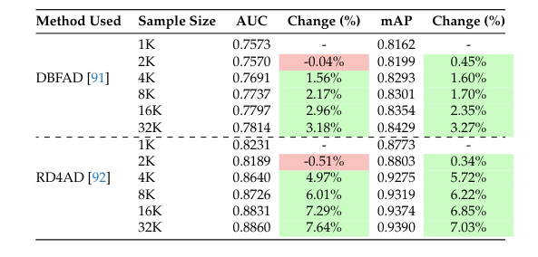

Home
Our efforts are aimed at addressing the intricate challenges posed by the extensive diversity in colors, textures, and defect characteristics encountered in fabric defect detection. To facilitate research and innovation in this field, we are pleased to introduce a groundbreaking dataset. This dataset comprises a comprehensive selection of fabrics and defects sourced from a reputable textile company based in Portugal.
Dataset/Downloads
The Lusitano dataset was collected over a 3-month period, spanning from January to March, from Paulo de Oliveira, S.A., based in Covilhã, Portugal 1, a prominent textile 285 company in Portugal renowned for its innovative contributions to the textile industry. To constitute the dataset, we placed 1 camera in front fabric inspection machine with a strong and nearly uniform light source This dataset comprises images with dimensions of 4096 × 1024, meticulously captured by an industrial-grade Teledyne Dalsa Linea camera 2. The camera’s high resolution and precision ensure the accurate depiction of textile samples, capturing intricate details crucial 291 for defect analysis. It is noteworthy that the defects depicted in this dataset are not artificially generated; rather, they stem from genuine occurrences observed during this collection period. These defects represent real-world challenges encountered in textile production processes. The dataset provides an encompassing view of various fabric examples, showcasing normal images as well as examples of defects. We announce two folders train and test in the same folder architecture, a MVTEC AD dataset, containing images normal in training and normal in testing, both defect and normal. Details of training contains 32k normal images for model training and testing contains 1100 normal and 1300 defect images
Experiments
Citations:
- 91. Thomine, S.; Snoussi, H. Distillation-based fabric anomaly detection. Textile Research Journal 2024, 94, 552–565.
- 92. Deng, H.; Li, X. Anomaly detection via reverse distillation from one-class embedding. In Proceedings of the Proceedings of the IEEE/CVF Conference on Computer Vision and Pattern Recognition, 2022, pp. 9737–9746.
About
Contact:
- Rui Carrilho, Kailash A. Hambarde, and Hugo Proença,
- University of Beira Interior, IT: Instituto de Telecomunicações, Covilhã, Portugal;
* Correspondence: rui.carrilho@ubi.pt, kailas.srt@gmail.com,
Funding:
This work is funded by EU (NextGenerationEU program) and by PRR: Plano de Recuperação e Resiliência, in the scope of the "Projeto Lusitano - Agenda Mobilizadora para a Inovação Empresarial da Indústria Têxtil e do Vestuário de Portugal” (2022-C05i0101-02, SGO 2030). Also, it is co-funded by FCT/MCTES through national funds and by EU funds under the project UIDB/50008/2020.
Acknowledgments:
This work was funded by FCT/MEC through national funds and co-funded by FEDER - PT2020 partnership agreement under the projects UIDB/50008/2020, POCI-01-0247-FEDER-033395.